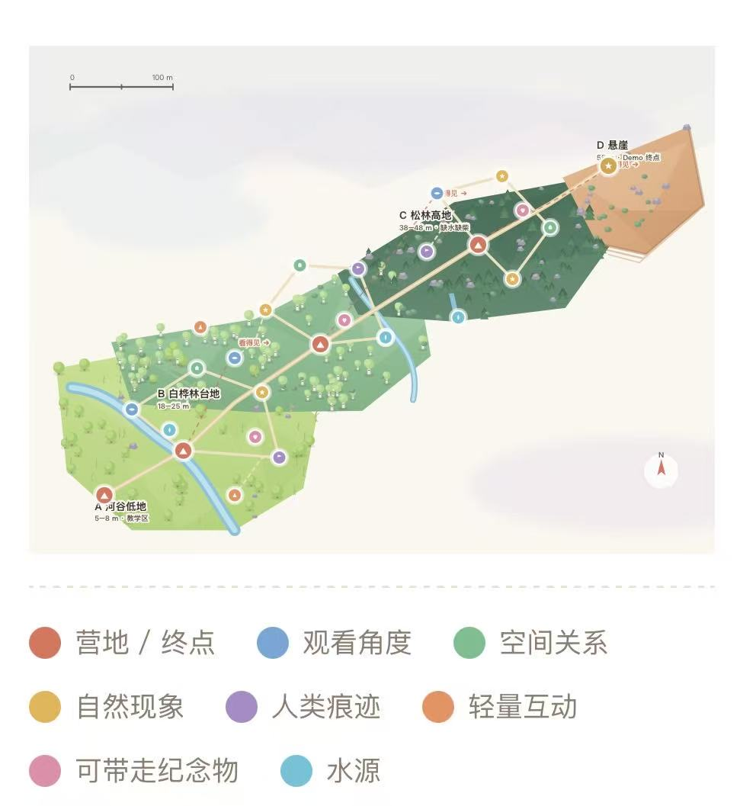
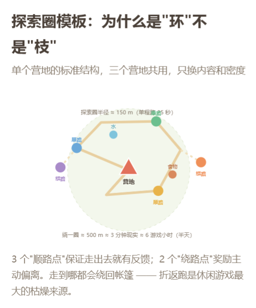

游戏简介
这是一款3D风格化卡通的休闲治愈养成游戏。玩家带着一只小狗在自然环境中旅行，沿途探索、获取食物、安排日常生活，并在合适的地方搭建临时营地。随着探索不断深入，会慢慢发现自己更想去、也更远的地方。
核心循环是「观察环境，选定一个想去的地方 → 准备食物与补给 → 外出探索、采集、发现新地点 → 回到营地做饭、休息、整理 → 修整之后，再往更远处或迁营出发」。
探索采用越走越高的珠链式地图结构，细节见下方地图设计。
小狗会帮忙搬运、寻找水源和食物、自主发现资源；你昏睡时它守在身边，饿昏后还会叼来果子把你唤醒。它是整段旅程中最主要的陪伴感来源。
初版引擎地图布局
暂定是以下地图方案，之后我会基于这一版做场景调试，我出原型之后根据大家测试DEMO的感觉更改模型排布。整体是一条约600米见方的珠链主径，串起3处落脚点，从河谷一路爬升到悬崖。每个营地各带一个5到7个探索点的环形探索圈，站在这处营地就能看见下一个目标，这也是迁营的主要动机。
整体大但相对空旷，减少非必要工作量，垂直方向就是叙事方向，越走越高，终点是整张地图的最高点。
单个营地的探索圈半径约150米，绕一圈约500米。圈内放3个顺路点保证走出去就有反馈，再放2个绕路点奖励主动偏离，走到哪都会绕回帐篷，避免来回折返的枯燥。每一次迁营都是一次明确的上坡。
| 区域 | 水源 | 食物 | 柴火 | 离开动机 |
|---|
| A 河谷低地 | 河，约30米 | 浆果×8，密集 | 充足 | 浆果采完，北坡能看见白桦林 |
| B 白桦林台地 | 溪或潭，约60米 | 蘑菇×5，少量浆果 | 中等 | 林中夜里太暗，能看见岩脊孤松 |
| C 松林高地 | 山泉，约120米 | 蓝莓×4，分散 | 几乎没有 | 什么都缺，但已能看见悬崖 |
| D 悬崖 | 无 | 无 | 无 | 终点，坐下看云海 |
因为不提供地图界面，认路主要靠几层线索，每区一个剪影独特的视线锚点（白桦白线、岩脊孤松、橙色断层），主径与支线的小径语言，随距离衰减的水声和高地风声，小鸟群提示资源点，以及小狗抽动鼻子、转向、回头看你。地图不用空气墙，陡坡会让人下滑，密灌木钻不过去，深水走到腰深会被推回，边缘用山体和浓雾渐隐。
制作思路
项目围绕2026 ThatGameJam主办方给出的音乐旋律展开创作，因此在2026年10月26日出题后启动。团队最初就想着让音乐成为叙事主线，随进程变化，并提出了出生发现、世界苏醒、生命汇聚、隐匿扩散的四段式情感结构。
采用风格化类似低多边形的卡通与温暖治愈的绘本感配色，让整段旅程看起来轻松、柔和，相对来说考验的是shader的风格化表现效果。
以规划能力的成长作为核心成长来源，难度适中，压力贴合一次轻松旅行的定位，整体类似《Big Walk》这类澳大利亚旅行游戏轻松愉快的感觉。
一人一狗之间的陪伴感，是主线探索之外最想传递的情绪。
团队最早还讨论过一个语音交互的想法，程序策划想将通过语音和小狗交互作为主玩法，让玩家像现实里那样教小狗做事、下达指令、让它帮忙做事情，目前仍在评估是否纳入正式玩法。
游戏内的时间按完整的24小时运行，昼夜与场景明暗随这24小时自然变化，现实与游戏的时间换算尚未确定，我之后会在测试时根据地图路线和实际游玩节奏调整。
制作分工
项目于2026年10月26日启动。赛前团队原计划5人，一名3D成员在开赛前一天退出，开赛后实际为本人、程序策划、音乐音效、文案共4人，3D方向的全部工作因此落在本人一个人身上。本人承担所有与视觉美学相关的工作，包括引擎与渲染表现、全部3D美术（角色、场景、地编、绑定、动画、贴图、Shader、后处理）、关卡设计与地图布局设计，以及2D概念图、UI，并负责整体美术方案与艺术风格的确定。项目处于原型制作阶段。合作层面，本人不止跟程序策划对接，根据项目需要也会跟文案、音效对接。程序策划此前没有3D游戏开发经验，对场景的单日产能和制作流程缺乏概念，进度预期与实际出入较大，同时Unity版本、仓库搭建等程序侧的基础条件也迟迟未定，进一步拖慢了推进节奏。项目属于学生阶段的小体量合作，大家预算都有限，所以从没请过外包，实在忙不过来时顶多再拉一个人进来合作。
初版概念图
这6张初版概念图是我在2026年10月26日自己出的，用于引擎原型场景的快速搭建与布局参考，之后会结合大量现实中野外旅行的地点来制作场景与触发事件。
开发杂记 · 2026年10月29日早晨
原本这个Unity我已经用2021.3.45f1搓了个带转动的自制晴天天空盒，卡通水体但还没做细节，后处理画面、对应的简单shader、策划要求的物品人物狗狗场景都有了。风效已经做好，但我还没挂在物体上。天空盒的白云因为后处理效果变得不白了，我也要把颜色改成白的，会更卡通一点。
这是10月28日的一人一狗小场景展示
2026年10月29日根据策划的要求把Unity换成高版本6000.3.27f1。他终于建仓了（哭了，终于等到这一天，还以为他不建了）。
2026年10月28日深夜，策划拉了个TA妹妹来帮我打杂，但我目前还没想好要给她派什么任务。大概会给她能胜任的中间旅行区域，以及部分后面区域的场景建模。我回家还得列需求表才行，感觉不像美术侧该干的事。原本我打算根据策划的想法定制四个探险区域，2026年10月27日已经给策划出了一版地图设计。
我出的一版地图设计

地图探索小圈示意

2026年10月28日深夜，文案老师询问这个地图整个的规划，我暂时用27号出的地图设计供她写关联事件的故事。
现在已经是2026年10月29日早上了，第一块区域已经ok。人物和狗狗如果不需要改动，就已经可以用现在这一版有基本绑定动作的模型。反正也不是正式的商业项目，仔细想想现在所有工作量如果要按正式项目来做，是要打磨一年的。
哎，主要是昨天深夜策划又想改整个探险地块的风格，改成中式公园那种。他给了两个参考视频，一个是杭州九溪，一个是天目山，我还没看完，但看地名大概知道长什么样，毕竟这些地方以前在国美的时候去过，有照片还大致记得。
杭州九溪
天目山
由于这个旅行游戏有触发事件以及回忆，我可能还得列出需要做的卡通特效、触发前和触发后的变化。对了还要给模型加碰撞体，动画状态机也还没连。算了晚上再整吧，现在先写到这里。
开发杂记 · 2026年10月31日周六
凌晨策划来找我对进度、排时间，说想算算我有多少时间好规划一下。我说昨天没睡、回家补觉到现在，一般晚上十点以后都有空。他顺口问测试场景的资源是不是网上找的、有没有动画，我说不是、也没动画，要的话自己现做——这种手拉模型填色的东西没技术含量，又不是写实，用不着搓一两个月。
接着问起分工，提到另一个美术四季豹老师，就是10月28号深夜策划拉进来的那个TA妹妹在读留子，我说还没跟她沟通过，策划他们想要的三个地区不知道怎么分工最好，本来分工的活就不是美术侧分的，我就先提了句一人分一半。但他又说可能没时间做这么大的场景，要改。聊到风格，他说我之前那版除了树、石头、地面可能要再改改，别的已经挺有风格化那味了。我说场景资产也可以分她做一点，反正游戏最后跑起来分辨率不高也看不太清。
关于画面，他一直问我模型是不是在别的软件里烘焙好的，我就觉得很奇怪这种东西对美术来说不是有手就行吗，我就说没烘焙、这也不是PBR，就是自己手拉模型填色，比角色简单多了，会建模会画画就行；已经上了材质球，还在做假光照，不上材质球会很丑。他原本拿参考图是想当场景用，现在也觉得那么弄工作量太大。阴影的事他让我到时候看情况调。
美术风格这块暴露了一个挺典型的问题：10月26号起我就给过大致的美术文档，参考图也发给他挑了，结果到31号他还在说“到现在还没定下来一套风格”，只丢下一句觉得按现在小人和小狗的风格做就挺好。既然选图的时候已经点头，需求就不该拖到临近提交才反复摇摆。
再往后他让我给角色和小狗先绑些基础动画，发来他AI写的动画需求，让我看完把走跑、原地动作搞完推上去。问场景要不要做组件和变体，我说先别搞太多，现在都已经31号了，只剩一周的时间——这一周里还得算打包、推上去提交、再留出测试的余量，哪还有空给他磨叽。
场景那边我吐槽了一下：场景不是已经在做了吗，按以往策划得先画个草图给我、图里标好各职能要在哪放啥干啥，我再摆场景。我也明说“我要和另一个美术各一半工作量”——行，那场景我一个人一个晚上也能推上去。
到了下午，他说晚上要拉我和四季豹沟通分工，还说她现在在美国、可能在睡觉。这会儿我还在等他出图。
下午我加了四季豹老师，简单沟通了一下。她夸我的美术资产和风格，说整个场景风格妙不可言，她睡前也把地图白模搭完了。但她点出一个关键问题：我的模型和贴图本身没问题，只是不能复用。因为我合并成一组模型了，没有拆成单独的组件，所以她昨天没法直接拿去复用。
这点我确实忽略了：一开始只想着自己赶工，没留出拆分的时间，也没意识到这次多了一个美术可以分担，毕竟我之前都是自己干，早知道应该把资产拆成可复用的组件。跟她说今晚我把模型全拆成组件单独导出供她使用，后面她搭起来就快了。
时差也有点麻烦，我们三个所处的时区都不一样，开会约在北京时间晚上十点，她那边得定闹钟早点起来。
昨晚的场景截图做了个雾效对比，一共三种：一张没加雾效，另外两张加了雾效。加了雾、再带点颜色会显得比较梦幻；不加的话，海和天空那条交界线看着偏硬。不过现在回头再看截图，又觉得不加也没那么奇怪，两种其实都行。先都留着，过几天再看说不定又有新感觉。
2026年10月31日早 · 雾效对比

从26号交文档、发参考图到今天31号，美术风格一直在反复改，始终没有个定论；而距离提交只剩一周，还要预留打包、测试的余量，这种情况下需求还在摇摆，压力确实很大。分工上也有明显错位：地图设计、观察点设计、整张地图的走向，这些本该由策划侧牵头的事，全都落到了我一个人身上，美术侧把该做和不该做的都扛完了。这一点值得记下来，作为后面项目开工前对齐职能边界的教训。
另一个让我比较无奈的是参考图的前后不一致：策划一开始想要的美术风格，和他后来发给四季豹的参考图根本不是一回事。26号发图确认、他也点了头；后来他说想再招个美术，往外发的还是我那几张图；可转头发给四季豹的又变了，尺度更大，一边又说没时间做。拍板的是他、转图的是他，最后却全成了我要面对的问题——这类需求源头不统一，是最消耗精力的地方。
场景变体、组件也让我来想，这些其实超出了纯美术的范畴。美术这边能做的我基本都独立完成了——天空盒、风效、特效、材质shader、水体、后处理，全是我自己调的；连让天空盒转起来要挂的C#代码文件，也是我顺手写好的。策划侧该产出、该拍板的内容，反而也一路堆了过来。作为一脚踩进美术、又伸手碰代码的TA，这倒让我把这些管线环节都亲手过了一遍。
沟通上还有一个反复出现的情况：他习惯用质疑的语气追问“到底怎么做的”，即使偶尔夸两句，也总带着一层不信任，这种感觉其实不太好受。我的专业就是游戏与动画，技术美术、3D场景、3D角色也都做过，最后又转回技术美术——这些背景项目组的大家都清楚，这种情况下还要反复自证，多少让人心凉。更何况，如果需求方自己都依赖AI来做判断和总结，再拿这套来质疑执行方、质疑带队人，就更站不住脚了。
剩下还有一堆收尾的事在等着：icon得我来画，UI也得靠我自己搭，全都压在最紧的这一周里确实麻烦。策划一开始招人的需求就写得很清楚——要会做场景设计的3D辅助、专门帮我把场景搭起来，是他自己乱找人，找来的TA妹妹方向对不上；不过好在她至少不会乱加需求，能帮我把做好的组件摆到地图上，也算分担了一部分。
UI 我肯定得画，这是跑不掉的。更不踏实的是，不知道他首页、开始界面到底做了没有；要是没做，进去就直接落在场景里，连那一层的动画也没有。看下来，Unity 的动画状态机、timeline 这些他大概率也不会碰，最后估计又得回到我头上自己弄。
开会前我又冒出个新想法：做一个煮饭时的烟雾特效，锅灶一开就该有烟往上飘。先把组件逐个拆好、归位到零点，拆分顺手再把烟效加上去。场景这边虽然大家都说挺不错，但我心里还是不太痛快。先记到这儿，剩下的等开完会再往下写。
现在回头看，真应了开赛前退出的那个美术说过的话：别把项目做太大。前后加起来不到十四天，就这么点时间，想一口气造辆汽车是不可能的，能把轮子造出来就已经不错了。项目体量这件事从一开始就该被摁下来，但是现在一直在加东西，就跟许愿一样。
返回小游戏列表